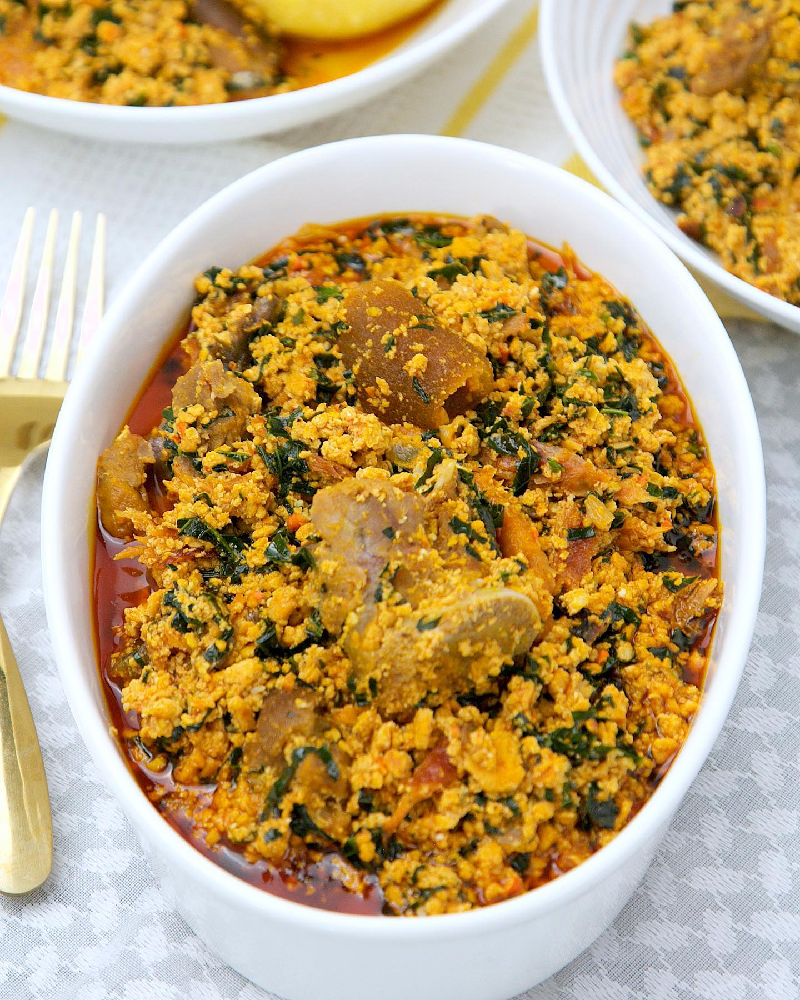
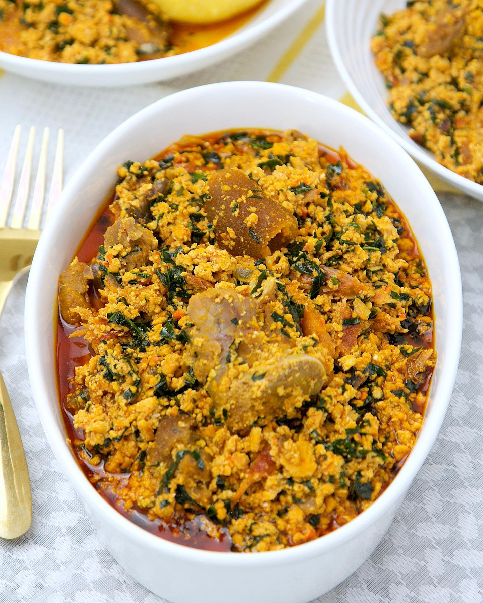
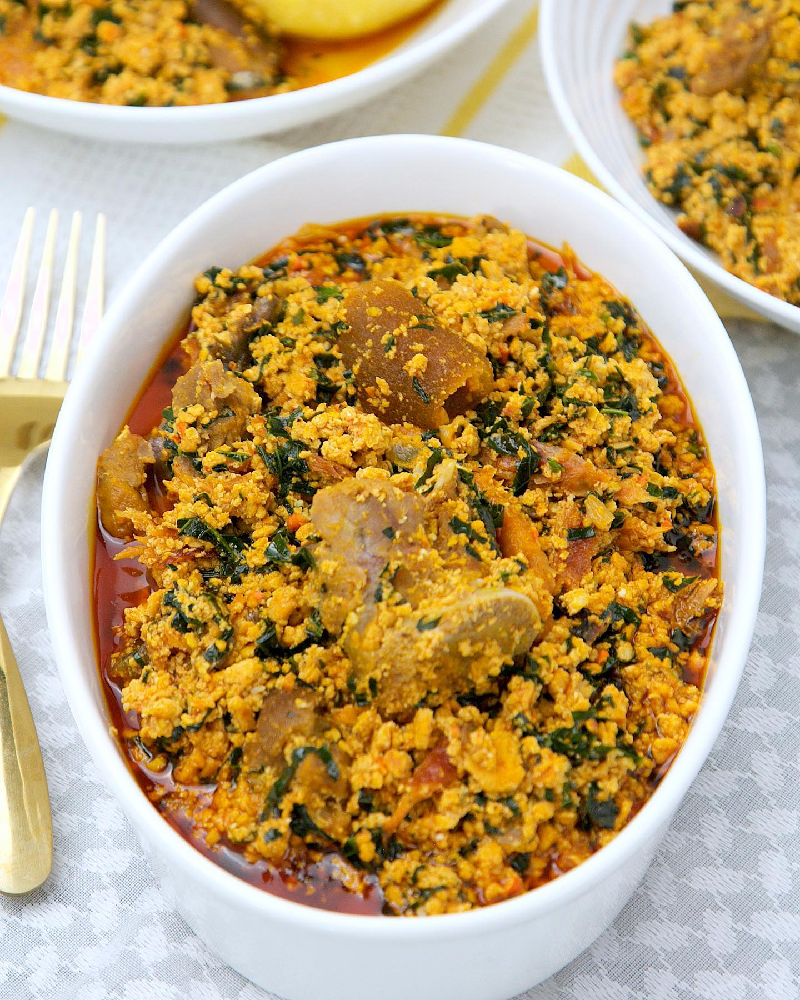

Eat healthy, stay healthy.
A multi-cultural restaurant, with dishes ranging from the ever popular Nigerian Jollof rice, to the most enjoyed British Shepherd's Pie. AfriBrit is truly a home away from home, a place we truly believe you would love to be.
